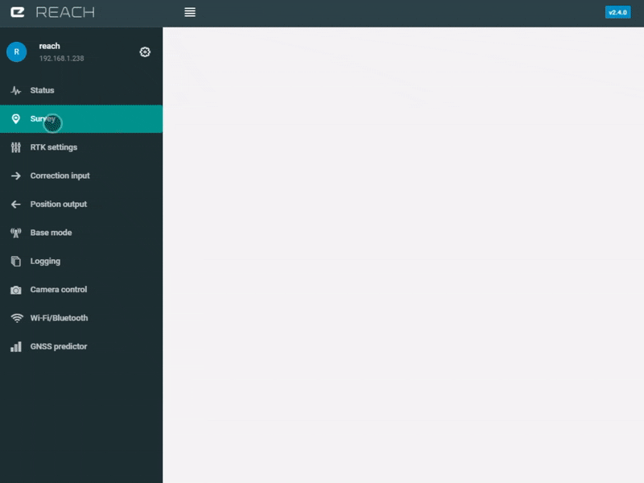
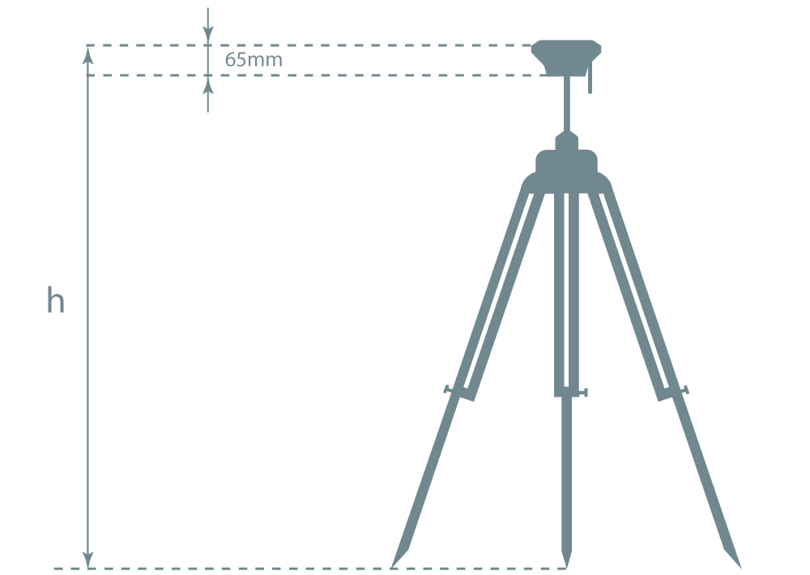
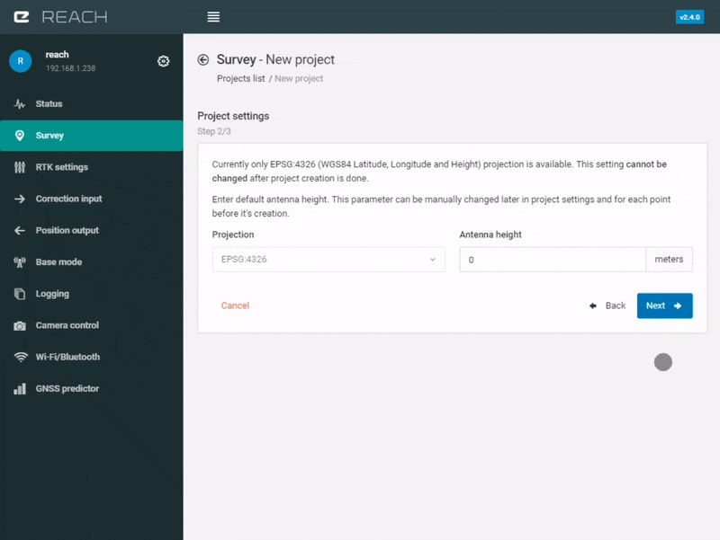
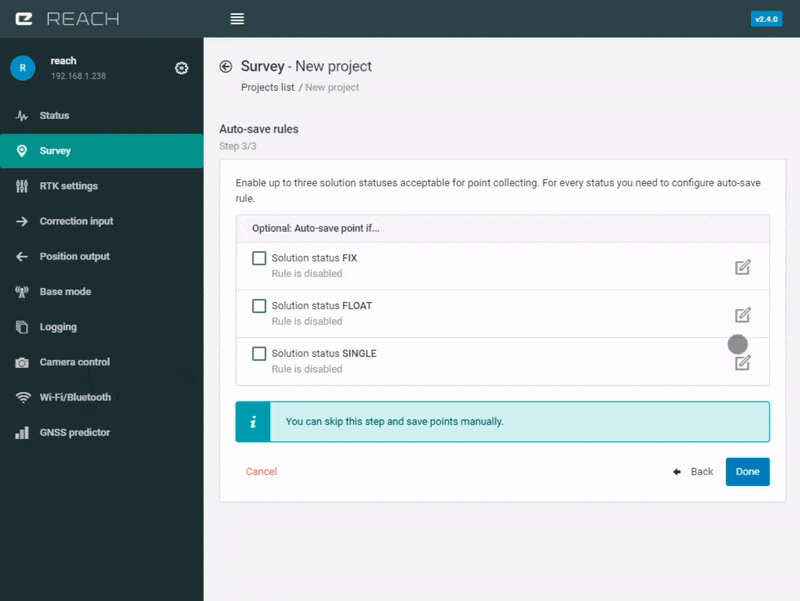
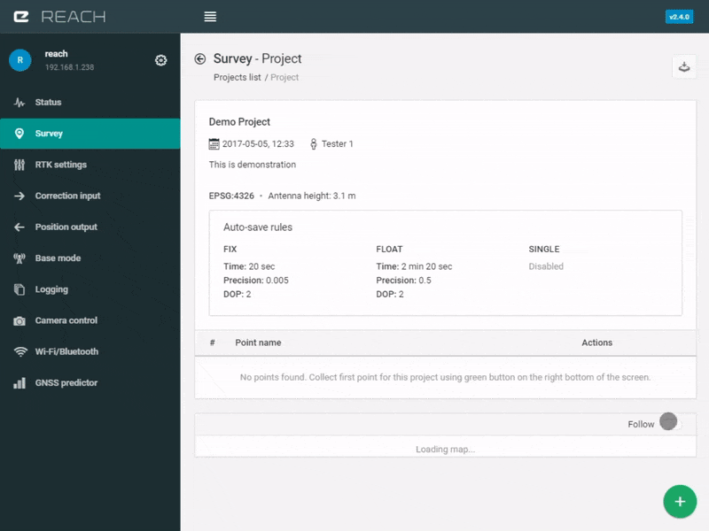
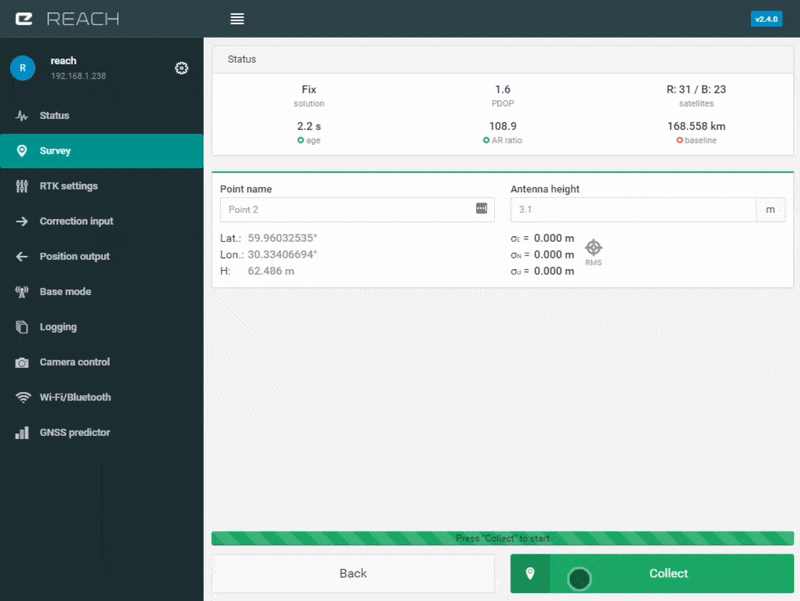
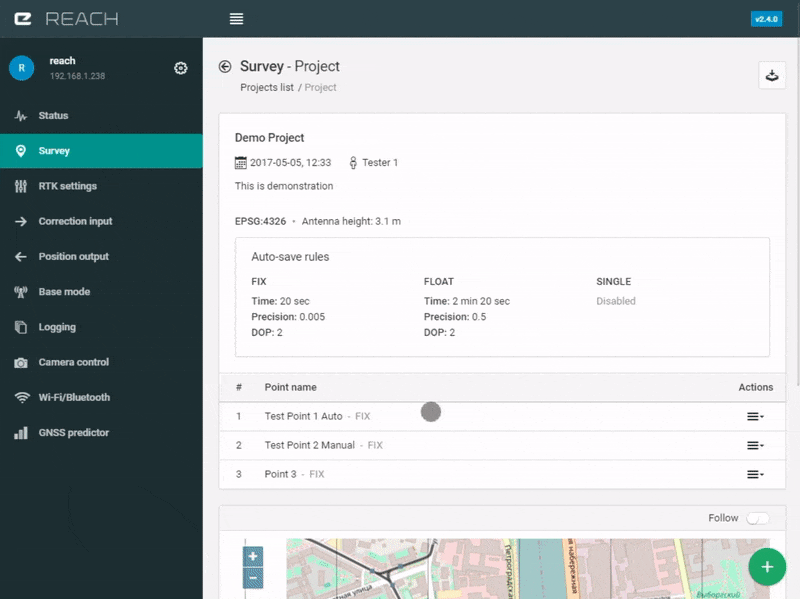

Relevés
Vous pouvez relever des points avec l'application ReachView en utilisant l'utilitaire de relevés de points "Point collection". Cette fonctionnalité vous permet de relever des points par projet avec des règles d'enregistrement automatiques ou manuelles et ensuite d'exporter les données dans différents formats.
Cet outil est adapté à l'arpentage et aux points de contrôle.
Créer un Nouveau Projet¶
Informations de Base (Basic information)¶
Pour démarrer un nouveau projet selectionnez l'onglet "Survey" dans ReachView et cliquez sur le bouton de nouveau projet "New Project". Donnez un nom à votre projet et assignez un auteur, vous pouvez renseigner des informations supplémentaires dans la section commentaires. Soumettre les informations de bases en appuyant sur le bouton suivant "Next".

Configuration du projet¶
Lors de cette étape vous devez chosir le système de projectoin. Actuellement vous pouvez choisir la projection EPSG:4326 (Latitude, Longitude et Altitude WGS84).
Attention
Le système de projection ne peut-être modifié une fois le projet créé.
Dans cette section vous pouvez également renseigner la hauteur par défaut de l'antenne, qui est en réalité la distance entre l'antenne et le point en cours de mesure (h sur le schéma suivant).

Ce paramètre peut être changé manuellement pour chaque point avant d'en faire le relevé.

Règles d'enregistrement automatiques¶
Avec l'outil de relevés de points vous pouvez relever des points manuellement ou en utilisant des règles automatiques. Si vous voulez effectuer des relevés manuels vous pouvez sauter cette étape. Les règles sont individuelles pour les status SINGLE, FLOAT et FIX et peuvent s'appliquer à la solution spécifique.
Les règles peuvent être paramétrées selon trois critères:
-
Temps d'observation requis (Required observation time)
-
Précision (Precision)
Ce paramètre indique la plus grande erreur RMS () lors de l'acquisition. L'écart type pour une solution "Single" est habituellement de plusieurs mètres, avec une solution "Float" vous pouvez espérer une précision inférieure au mètre, et avec un solution "Fix" vous pouvez obtenir une précision de l'ordre du centimètre. -
DOP
DOP signifie "dilution de la précision" (dilution of precision en anglais) en rend compte de l'effet de la position géométrique des satellites sur la précision de la mesure. Plus la géométrie est favorable, plus la valeur de la DOP est faible. Pour les règles d'enregistrement automatiques la valeur par défaut est de 2, mais quand la DOP est plus importante il n'est pas recommandé de relever des points parce qu'une mauvaise géométrie satellite peut détériorer la justesse des résultats.
Exemple de configuration pour les règles d'enregistrement automatiques¶
Voici un exemple de régles d'enregistrement automatiques pour des status FLOAT et FIX. Le temps d'observation pour une solution FLOAT est 2 minutes et 20 secondes, la précision est de 0.5 mètres et la DOP est de 2. Pour la solution FIX le temps d'observation est de 20 secondes, la précision est de 0.005 mètres et la DOP est de 2.

Note
Les règles d'enregistrement automatiques de cet exemple sont prises à titre d'exemple uniquement.
Le point sera relevé automatiquement après 20 secondes d'observation si la DOP ne dépasse pas 2 et l'écart type RMS est inférieur à 0.005 mètres. Dans les cas où la solution est FLOAT, le temps d'observation sera de 2 minutes et 20 secondes dans les mêmes conditions.
Une fois les règles d'enregistrement automatiques paramétrées, vous pouvez cliquer sur le bouton "Done" et passer à la vue projet et l'interface de l'outil de relevés.
Interface de relevés de points (Survey tool interface)¶
L'interface de l'utilitaire de relevés de points affiche les paramètres du projet, les règles d'enregistrement automatiques ainsi que la liste des points relevés. La carte ci-dessous affichera les points relevés. Dans le coin en haut à droite de l'écran vous trouverez l'icône pour exporter le projet.
Attention
Dans la version courante de l'application vous ne pouvez pas éditer les paramètres du projet que vous avez initialement renseignés, ces possibilités seront ajoutées dans une version prochaine de l'application.
Relever d'un point¶
- Pour relever un point, utilisez le bouton vert en bas à droit de l'écran.
- Dans une nouvelle fenêtre vous verrez une section de statut avec le temps réel RTK et le moyennage des coordonnées.
- Dans l'onglet des paramètres des coordonnées (Point settings) vous pouvez renseigner un nom (si vous le laissez vide le nom par défaut sera "Point 1", "Point 2", etc).
- Spécifiez la hauteur d'antenne si vous ne l'avez pas fait dans les paramètres du projet ou si celle-ci a été modifiée.
- Lorsque tout est prêt vérifiez la barre de statut ainsi que le bouton vert de relevés "Collect" en bas de l'écran.

Si la barre de statut est rouge et que vous voyez le message en attente de statut "Waiting for status", vous ne serez pas en mesure de commencer le relevé du point. L'outil nécessite une certaine visibilité satellite, au moins un solution SINGLE est nécessaire. Si la barre de statut est verte, cliquez sur "Collect" pour démarrer le relevé du point. Si vous commencez un relevé et que la règle d'enregistrement automatique pour le statut courant est activé, la barre de statut en bas de l'écran affichera un compte à rebours concernant le temps d'observation requis. Quand le temps nécessaire sera écoulé, le point sera automatiquement enregistré. Ne pas oublier d'appuyer sur le bouton "Save&Go" pour enregistrer le point et passer au suivant! Si vous souhaitez relever un point manuellement, appuyez simplement sur le bouton d'acceptation "Accept" pendant l'acquisition. Votre point sera enregistré et vous pourrez passer au suivant.

Exporter les données¶
Avant d'exporter vous pouvez supprimer les points inutiles depuis la liste dans l'interface du projet. En cliquant sur chacun des points vous pouvez voir sa description et ses coordonnées. Quand vous avez fini avec le relevé des points vous pouvez exporter les points du projet en DXF, GeoJSON, ESRI shapefiles. Les gros projets peuvent prendre un certain temps à traiter.

A faire (To-Dos)¶
L'outil de relevés (Survey tool) est en constante évolution. Beaucoup de fonctionalités comme de nouveaux formats d'exportation, de nouveaux paramètres de projets vont vite arriver. La discussion, incluant les questions ou demande de fonctionalités, est accessible sur le forum de la communauté.